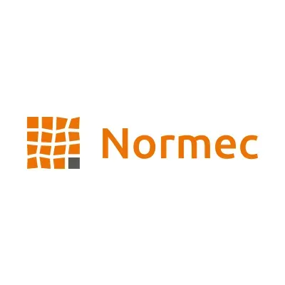
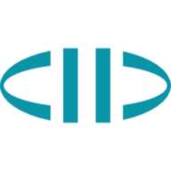
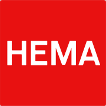
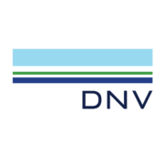
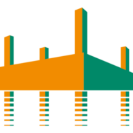

Executive Search, Recruitment en Interim Management — Amsterdam
Zoeken en verbinden, de rode draad in ons werk.
Waterman & Partners richt zich op het invullen van management-, directie- en specialistische functies. Door de research naar kandidaten zelf uit te voeren, kunnen wij snel de beste kandidaten voor onze opdrachtgevers traceren.
Na een studie rechten in Leiden, via een loopbaan bij een gerenommeerde internationale Executive Search organisatie, begon Andrea Waterman in 2007 haar eigen onderneming Waterman & Partners. Wij zijn actief met Executive Search, Recruitment en Interim Management.
Andrea Waterman weet feilloos de juiste combinaties te maken door ook tussen de regels door naar mensen te luisteren en te kijken. Andrea: “Er wordt vaak meer gezegd dan er verteld wordt. De kunst is dat op de juiste manier te vertalen.”
Andrea: “Zoeken en verbinden, is de rode draad in ons werk. Als je in het enorme aanbod van werkgevers en werknemers net die juiste match weet te maken, is dat prachtig om te doen, iedere keer weer. Oprechte interesse speelt bij ons een allesbeslissende rol. Wij begrijpen wat u zoekt, erkennen dat en doen er vervolgens iets mee.”
Eigen research
Door de research zelf uit te voeren, traceren en valideren wij snel de beste kandidaten.
Discretie
Vertrouwelijkheid voor kandidaat én opdrachtgever. We opereren nadrukkelijk in de luwte en plaatsen zelf beslist geen benoemingen op de diverse sociale media.
Oprechte interesse
Wij begrijpen wat u zoekt, erkennen dat en doen er iets mee.
Netwerk
Een eigen database van kandidaten en intermediairs.
Twee takken
Publiek & privaat domein
Waterman & Partners kent twee takken, ieder met de eigen dynamiek, cultuur en eisen die daarbij horen.
Publiek domein
Voor overheids- en non-profitorganisaties: gemeenten, uitvoeringsorganisaties en maatschappelijke instellingen. Posities in het publieke domein vragen om gevoel voor bestuurlijke verhoudingen, maatschappelijke opgaven en publieke verantwoording.
Privaat domein
Voor het bedrijfsleven: van financiële en zakelijke dienstverlening tot industrie, retail, technologie, ICT dienstverleners, Contract Research Organisaties (CRO's) en advocatuur. Hier draait het om marktkennis, snelheid en kandidaten die direct waarde toevoegen aan de organisatie.
Diensten
Wat wij voor u doen
Executive Search
Executive Search staat bij Waterman & Partners voor het actief zoeken en benaderen van hooggekwalificeerde kandidaten voor een vacante positie bij onze opdrachtgever.
Samen met de opdrachtgever brengen we allereerst het gewenste profiel van de kandidaat in kaart. De bundeling van de specifieke marktkennis van de opdrachtgever en onze Executive Search ervaring stelt ons in staat om doelgericht en discreet kandidaten te gaan benaderen.
Wij vinden kandidaten via ons uitgebreide netwerk en eigen database en benaderen deze personen rechtstreeks. Op grond van een of meer gesprekken bepaalt Waterman & Partners uiteindelijk welke kandidaten aan de opdrachtgever worden voorgesteld.
Recruitment
Waterman & Partners Recruitment is dé werving- en selectiepartner voor onze opdrachtgevers als het gaat om het snel en goed invullen van openstaande vacatures.
Om kandidaten te werven, gebruiken wij verschillende instrumenten zoals websearch, database search en het plaatsen van advertenties. In overleg met onze opdrachtgever bepalen we wat de beste aanpak is.
Op grond van een eerste selectie stelt Waterman & Partners een aantal kandidaten aan de opdrachtgever voor, waarna deze de keus maakt welke kandidaten uitgenodigd worden voor een kennismakingsgesprek.
Interim Management
Waterman & Partners treedt ook op als bemiddelingsbureau voor interimfuncties in diverse branches. Wij bemiddelen in hoogopgeleide interimmers met minimaal 5 jaar relevante werkervaring die allen zelfstandig ondernemer zijn.
Is uw afdeling tijdelijk overbelast? Zit u in een verandertraject? Of heeft u behoefte aan expertise die uw organisatie niet in huis heeft? Waterman & Partners biedt u een professional die uw capaciteitsprobleem direct oplost.
Waterman & Partners werkt voor een zeer divers portfolio van nationaal en internationaal georiënteerde opdrachtgevers in zowel de profit als non-profit sector. Wij zijn actief in vrijwel ieder marktsegment en richten ons op het vervullen van functies in uiteenlopende disciplines zoals Marketing, Sales, Finance, HR en (algemeen) Management.
Executive Search leent zich uitstekend voor het vervullen van vacatures voor functies met een hoog beloningsniveau. De afdeling Recruitment zetten wij in voor alle overige vacatures. Onze interimafdeling bemiddelt in tijdelijke opdrachten.
Capgemini
TNO

Normec
GVB
FDI

SRC
ABN AMRO
ProQares
Cognizant
Sermone

HEMA
Tele2
T-Systems International

DNV
Amazon (AWS)
Yarden
Diebold Nixdorf
Triskelion
Dariuz

Combifloat
2AT
Dockwise
Heerema Fabrication Group
SDH
Innogi Technologies
Intravacc
Efectis
EMPIQ
Payingit
Aanbevelingen
Opdrachtgevers over Waterman & Partners
“Andrea Waterman kenmerkt zich door verder te kijken dan een vacaturetekst of de usual kandidaten. Ze gaat echt op zoek naar personen die passen binnen je organisatie, de cultuur en wat er op dat moment nodig is.”
Ellen Swinkels — Directeur Commercie, GVB
“Andrea managed to find top-quality candidates for even the most specialized key positions within our company, demonstrating her deep industry knowledge and commitment to client success.”
Arthur de Boer — Commercial Director, SRC Group
“De kwaliteit van een headhunter bewijst zich altijd weer als het een lastige search is. Andrea blijft doorgaan tot de juiste persoon gevonden is.”
Annemarie Geysen — HR Manager, Heerema Fabrication Group
Waterman & Partners vervult op dit moment diverse vacatures. Gezien het vertrouwelijke karakter plaatsen wij deze functies niet op onze site. Voor onze klanten verwijzen wij u graag naar Opdrachtgevers en Aanbevelingen.
Mocht u meer willen weten over onze vacatures dan kunt u ons mailen via info@watermanpartners.nl. Andrea Waterman kunt u telefonisch bereiken op 06 - 21838892.
Stuur uw cv
Interesse in een van onze vacatures?
Als u interesse heeft in een van onze vacatures, dan ontvangen we graag uw cv via vacatures@watermanpartners.nl. Stuur uw cv als MS Word (.doc) of Adobe PDF (.pdf), maximaal 1 MB. Wij nemen dan zo spoedig mogelijk contact met u op.
 Capgemini
Capgemini Cognizant
Cognizant